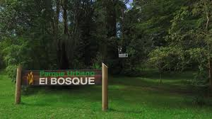

<!DOCTYPE html>
<html>
<head>
    
    <meta http-equiv="content-type" content="text/html; charset=UTF-8" />
    <script src="https://cdn.jsdelivr.net/npm/leaflet@1.9.3/dist/leaflet.js"></script>
    <script src="https://code.jquery.com/jquery-3.7.1.min.js"></script>
    <script src="https://cdn.jsdelivr.net/npm/bootstrap@5.2.2/dist/js/bootstrap.bundle.min.js"></script>
    <script src="https://cdnjs.cloudflare.com/ajax/libs/Leaflet.awesome-markers/2.0.2/leaflet.awesome-markers.js"></script>
    <link rel="stylesheet" href="https://cdn.jsdelivr.net/npm/leaflet@1.9.3/dist/leaflet.css"/>
    <link rel="stylesheet" href="https://cdn.jsdelivr.net/npm/bootstrap@5.2.2/dist/css/bootstrap.min.css"/>
    <link rel="stylesheet" href="https://netdna.bootstrapcdn.com/bootstrap/3.0.0/css/bootstrap-glyphicons.css"/>
    <link rel="stylesheet" href="https://cdn.jsdelivr.net/npm/@fortawesome/fontawesome-free@6.2.0/css/all.min.css"/>
    <link rel="stylesheet" href="https://cdnjs.cloudflare.com/ajax/libs/Leaflet.awesome-markers/2.0.2/leaflet.awesome-markers.css"/>
    <link rel="stylesheet" href="https://cdn.jsdelivr.net/gh/python-visualization/folium/folium/templates/leaflet.awesome.rotate.min.css"/>
    
            <meta name="viewport" content="width=device-width,
                initial-scale=1.0, maximum-scale=1.0, user-scalable=no" />
            <style>
                #map_d044ce553e95d46d4da222f1bcc67087 {
                    position: relative;
                    width: 100.0%;
                    height: 100.0%;
                    left: 0.0%;
                    top: 0.0%;
                }
                .leaflet-container { font-size: 1rem; }
            </style>

            <style>html, body {
                width: 100%;
                height: 100%;
                margin: 0;
                padding: 0;
            }
            </style>

            <style>#map {
                position:absolute;
                top:0;
                bottom:0;
                right:0;
                left:0;
                }
            </style>

            <script>
                L_NO_TOUCH = false;
                L_DISABLE_3D = false;
            </script>

        
    <script src="https://cdn.jsdelivr.net/npm/leaflet.fullscreen@3.0.0/Control.FullScreen.min.js"></script>
    <link rel="stylesheet" href="https://cdn.jsdelivr.net/npm/leaflet.fullscreen@3.0.0/Control.FullScreen.css"/>
    <script src="https://cdnjs.cloudflare.com/ajax/libs/leaflet.draw/1.0.2/leaflet.draw.js"></script>
    <link rel="stylesheet" href="https://cdnjs.cloudflare.com/ajax/libs/leaflet.draw/1.0.2/leaflet.draw.css"/>
    <script src="https://unpkg.com/leaflet-control-geocoder/dist/Control.Geocoder.js"></script>
    <link rel="stylesheet" href="https://unpkg.com/leaflet-control-geocoder/dist/Control.Geocoder.css"/>
</head>
<body>
    
    
            <div class="folium-map" id="map_d044ce553e95d46d4da222f1bcc67087" ></div>
        
    
            
        
</body>
<script>
    
    
            var map_d044ce553e95d46d4da222f1bcc67087 = L.map(
                "map_d044ce553e95d46d4da222f1bcc67087",
                {
                    center: [-39.82, -73.25],
                    crs: L.CRS.EPSG3857,
                    ...{
  "zoom": 11,
  "zoomControl": true,
  "preferCanvas": false,
  "drawExport": false,
  "layersControl": true,
}

                }
            );
            L.control.scale().addTo(map_d044ce553e95d46d4da222f1bcc67087);

            

        
    
            var tile_layer_1f319a3173c9f717f91e7d12b4c29729 = L.tileLayer(
                "https://tile.openstreetmap.org/{z}/{x}/{y}.png",
                {
  "minZoom": 0,
  "maxZoom": 24,
  "maxNativeZoom": 24,
  "noWrap": false,
  "attribution": "\u0026copy; \u003ca href=\"https://www.openstreetmap.org/copyright\"\u003eOpenStreetMap\u003c/a\u003e contributors",
  "subdomains": "abc",
  "detectRetina": false,
  "tms": false,
  "opacity": 1,
}

            );
        
    
            tile_layer_1f319a3173c9f717f91e7d12b4c29729.addTo(map_d044ce553e95d46d4da222f1bcc67087);
        
    
            L.control.fullscreen(
                {
  "position": "topleft",
  "title": "Full Screen",
  "titleCancel": "Exit Full Screen",
  "forceSeparateButton": false,
}
            ).addTo(map_d044ce553e95d46d4da222f1bcc67087);
        
    
            var options = {
              position: "topleft",
              draw: {},
              edit: {},
            }
                // FeatureGroup is to store editable layers.
                var drawnItems_draw_control_e0d71eb82e647e9beef89c6ea8b57063 =
                    new L.featureGroup().addTo(
                        map_d044ce553e95d46d4da222f1bcc67087
                    );

            options.edit.featureGroup = drawnItems_draw_control_e0d71eb82e647e9beef89c6ea8b57063;
            var draw_control_e0d71eb82e647e9beef89c6ea8b57063 = new L.Control.Draw(
                options
            ).addTo( map_d044ce553e95d46d4da222f1bcc67087 );
            map_d044ce553e95d46d4da222f1bcc67087.on(L.Draw.Event.CREATED, function(e) {
                var layer = e.layer,
                    type = e.layerType;
                var coords = JSON.stringify(layer.toGeoJSON());
                layer.on('click', function() {
                    alert(coords);
                    console.log(coords);
                });
                drawnItems_draw_control_e0d71eb82e647e9beef89c6ea8b57063.addLayer(layer);
            });
            map_d044ce553e95d46d4da222f1bcc67087.on('draw:created', function(e) {
                drawnItems_draw_control_e0d71eb82e647e9beef89c6ea8b57063.addLayer(e.layer);
            });

            
        
    

            var geocoderOpts_geocoder_4bc5d777b4a9655a44dddfe5923e5cee = {
  "collapsed": true,
  "position": "topleft",
  "defaultMarkGeocode": true,
  "zoom": 11,
  "provider": "nominatim",
  "providerOptions": {
},
};

            // note: geocoder name should start with lowercase
            var geocoderName_geocoder_4bc5d777b4a9655a44dddfe5923e5cee = geocoderOpts_geocoder_4bc5d777b4a9655a44dddfe5923e5cee["provider"];

            var customGeocoder_geocoder_4bc5d777b4a9655a44dddfe5923e5cee = L.Control.Geocoder[ geocoderName_geocoder_4bc5d777b4a9655a44dddfe5923e5cee ](
                geocoderOpts_geocoder_4bc5d777b4a9655a44dddfe5923e5cee['providerOptions']
            );
            geocoderOpts_geocoder_4bc5d777b4a9655a44dddfe5923e5cee["geocoder"] = customGeocoder_geocoder_4bc5d777b4a9655a44dddfe5923e5cee;

            L.Control.geocoder(
                geocoderOpts_geocoder_4bc5d777b4a9655a44dddfe5923e5cee
            ).on('markgeocode', function(e) {
                var zoom = geocoderOpts_geocoder_4bc5d777b4a9655a44dddfe5923e5cee['zoom'] || map_d044ce553e95d46d4da222f1bcc67087.getZoom();
                map_d044ce553e95d46d4da222f1bcc67087.setView(e.geocode.center, zoom);
            }).addTo(map_d044ce553e95d46d4da222f1bcc67087);

        
    
            map_d044ce553e95d46d4da222f1bcc67087.fitBounds(
                [[-39.82, -73.25], [-39.82, -73.25]],
                {"maxZoom": 11}
            );
        
    
            var tile_layer_d62470483698700bd5cefd9381ac94bf = L.tileLayer(
                "https://server.arcgisonline.com/ArcGIS/rest/services/World_Imagery/MapServer/tile/{z}/{y}/{x}",
                {
  "minZoom": 0,
  "maxZoom": 24,
  "maxNativeZoom": 24,
  "noWrap": false,
  "attribution": "Esri",
  "subdomains": "abc",
  "detectRetina": false,
  "tms": false,
  "opacity": 1,
}

            );
        
    
            tile_layer_d62470483698700bd5cefd9381ac94bf.addTo(map_d044ce553e95d46d4da222f1bcc67087);
        
    
        L.Control.CustomControl = L.Control.extend({
            onAdd: function(map) {
                let div = L.DomUtil.create('div');
                div.innerHTML = `<div style="font-size: 20px; color: black; font-weight: normal;
            padding: 5px; background-color: white;
            border-radius: 5px;">Red de parques y reservas naturales de Valdivia</div>`;
                return div;
            },
            onRemove: function(map) {
                // Nothing to do here
            }
        });
        L.control.customControl = function(opts) {
            return new L.Control.CustomControl(opts);
        }
        L.control.customControl(
            { position: "topright" }
        ).addTo(map_d044ce553e95d46d4da222f1bcc67087);
        
    
            var marker_191f91a7965c16dadeeffa3f0c15fe8c = L.marker(
                [-39.8045, -73.2502],
                {
  "iconColor": "darkred",
}
            ).addTo(map_d044ce553e95d46d4da222f1bcc67087);
        
    
        var popup_293b688a79740eaabc1b3b05b353bf21 = L.popup({
  "maxWidth": "100%",
});

        
            
                var html_67682617122b753bcbd13b8f25a15477 = $(`<div id="html_67682617122b753bcbd13b8f25a15477" style="width: 100.0%; height: 100.0%;">         <div style="text-align:center;">           <b>Jardín Botánico de la Universidad Austral de Chile</b><br>           Un espacio verde de 10 hectáreas dentro del campus Isla Teja, inaugurado en 1957. Alberga más de 950 especies de plantas nativas y exóticas, organizadas en jardines temáticos. Además, cuenta con un herbario y cumple funciones de investigación, educación ambiental y recreación.<br>                    </div>     </div>`)[0];
                popup_293b688a79740eaabc1b3b05b353bf21.setContent(html_67682617122b753bcbd13b8f25a15477);
            
        

        marker_191f91a7965c16dadeeffa3f0c15fe8c.bindPopup(popup_293b688a79740eaabc1b3b05b353bf21)
        ;

        
    
    
            var marker_eda4ce6104fc84085890c8f1e535e191 = L.marker(
                [-39.716258, -73.408522],
                {
  "iconColor": "darkred",
}
            ).addTo(map_d044ce553e95d46d4da222f1bcc67087);
        
    
        var popup_004441270893645e19814ade13c5dad5 = L.popup({
  "maxWidth": "100%",
});

        
            
                var html_2793db0f6005fcab2fc7d11a22e4ee64 = $(`<div id="html_2793db0f6005fcab2fc7d11a22e4ee64" style="width: 100.0%; height: 100.0%;">         <div style="text-align:center;">           <b>Reserva Punta Curiñanco</b><br>           Un área protegida administrada con CODEFF, ubicada en la localidad de Curiñanco. Posee bosques de selva valdiviana costera (olivillo, arrayán, ulmo, canelo, notro, lingue, meli, romerillo) y rocas costeras. Cuenta con 4 senderos autoguiados de baja dificultad.<br>                    </div>     </div>`)[0];
                popup_004441270893645e19814ade13c5dad5.setContent(html_2793db0f6005fcab2fc7d11a22e4ee64);
            
        

        marker_eda4ce6104fc84085890c8f1e535e191.bindPopup(popup_004441270893645e19814ade13c5dad5)
        ;

        
    
    
            var marker_21450b99264e3dff74c84ad63a9365c2 = L.marker(
                [-39.698311, -73.301462],
                {
  "iconColor": "darkred",
}
            ).addTo(map_d044ce553e95d46d4da222f1bcc67087);
        
    
        var popup_fbdb17354ef36f38f00432e3c9a64d94 = L.popup({
  "maxWidth": "100%",
});

        
            
                var html_2ba4de902f4b288b5b6453b78e9d7b17 = $(`<div id="html_2ba4de902f4b288b5b6453b78e9d7b17" style="width: 100.0%; height: 100.0%;">         <div style="text-align:center;">           <b>Parque Oncol</b><br>           Reserva forestal de más de 2500 hectáreas, ubicado a 28 km de Valdivia, en el cerro más alto de la Cordillera de la Costa. Posee bosques del tipo templado lluvioso, los cuales son un refugio para especies endémicas de flora y fauna, algunas de ellas en peligro de extinción.<br>                    </div>     </div>`)[0];
                popup_fbdb17354ef36f38f00432e3c9a64d94.setContent(html_2ba4de902f4b288b5b6453b78e9d7b17);
            
        

        marker_21450b99264e3dff74c84ad63a9365c2.bindPopup(popup_fbdb17354ef36f38f00432e3c9a64d94)
        ;

        
    
    
            var marker_7e13ecbe00a952ea5e0e1e97270e0821 = L.marker(
                [-39.80556857430721, -73.25538989238844],
                {
  "iconColor": "darkred",
}
            ).addTo(map_d044ce553e95d46d4da222f1bcc67087);
        
    
        var popup_94265b6218466983becf3c5c836791e6 = L.popup({
  "maxWidth": "100%",
});

        
            
                var html_674c49ecc575bc6a63ee947bdc56d62f = $(`<div id="html_674c49ecc575bc6a63ee947bdc56d62f" style="width: 100.0%; height: 100.0%;">         <div style="text-align:center;">           <b>Parque Saval</b><br>           Se Ubica en Isla Teja y es uno de los parques ubanos más recurridos. Presenta lagunas de lotos, bosque nativo con árboles centenarios, senderos, zona de picnic, multicanchas, vivero municipal y espacios para eventos deportivos y culturales.<br>                    </div>     </div>`)[0];
                popup_94265b6218466983becf3c5c836791e6.setContent(html_674c49ecc575bc6a63ee947bdc56d62f);
            
        

        marker_7e13ecbe00a952ea5e0e1e97270e0821.bindPopup(popup_94265b6218466983becf3c5c836791e6)
        ;

        
    
    
            var marker_01703c01546514a36f829bb4bf0fabe7 = L.marker(
                [-39.759171, -73.274445],
                {
  "iconColor": "darkred",
}
            ).addTo(map_d044ce553e95d46d4da222f1bcc67087);
        
    
        var popup_628e59410dda759a4be589f95af63028 = L.popup({
  "maxWidth": "100%",
});

        
            
                var html_39f2ebe52ac521606ee1201577f04137 = $(`<div id="html_39f2ebe52ac521606ee1201577f04137" style="width: 100.0%; height: 100.0%;">         <div style="text-align:center;">           <b>Parque de insectos Ishiku Lemu</b><br>           El Parque de Insectos, ubicado en la localidad de Punucapa, es una propuesta turística innovadora que fusiona educación ambiental, conservación del bosque valdiviano y una experienca gastronómica local. Este espacio ofrece a los visitantes una oportunidad única para explorar la rica biodiversidad del bosque nativo, a través de un recorrido guiado por un sendero natural.<br>                    </div>     </div>`)[0];
                popup_628e59410dda759a4be589f95af63028.setContent(html_39f2ebe52ac521606ee1201577f04137);
            
        

        marker_01703c01546514a36f829bb4bf0fabe7.bindPopup(popup_628e59410dda759a4be589f95af63028)
        ;

        
    
    
            var marker_fcbf4dd0fdd11e484f1c90dd4b04bd4d = L.marker(
                [-39.681519, -73.358439],
                {
  "iconColor": "darkred",
}
            ).addTo(map_d044ce553e95d46d4da222f1bcc67087);
        
    
        var popup_40a02748078cdd3583a30cae12d3747f = L.popup({
  "maxWidth": "100%",
});

        
            
                var html_693d6c25e4057eda1604a31496689dd2 = $(`<div id="html_693d6c25e4057eda1604a31496689dd2" style="width: 100.0%; height: 100.0%;">         <div style="text-align:center;">           <b>Parque Punta Cóndor</b><br>           Corresponde a un proyecto familiar de conservación, que busca preservar y restaurar fragmentos de bosque de olivillo costero y otros ecosistemas claves de la costa valdiviana. Se compone de al menos 95 hectáreas, las cuales cuentan con senderos que recorren fragmentos de bosque templado lluvioso, con una vista hacia la costa y Pilolcura.<br>                    </div>     </div>`)[0];
                popup_40a02748078cdd3583a30cae12d3747f.setContent(html_693d6c25e4057eda1604a31496689dd2);
            
        

        marker_fcbf4dd0fdd11e484f1c90dd4b04bd4d.bindPopup(popup_40a02748078cdd3583a30cae12d3747f)
        ;

        
    
    
            var marker_be26079712042b49d1bf68545bd0a68f = L.marker(
                [-39.818903, -73.234969],
                {
  "iconColor": "darkred",
}
            ).addTo(map_d044ce553e95d46d4da222f1bcc67087);
        
    
        var popup_033baa0d98a6496af744886ebadcce60 = L.popup({
  "maxWidth": "100%",
});

        
            
                var html_68e7290baeed0e682c84acff534aa494 = $(`<div id="html_68e7290baeed0e682c84acff534aa494" style="width: 100.0%; height: 100.0%;">         <div style="text-align:center;">           <b>Parque Harnecker</b><br>           Se compone de 4.5 hectáreas cubiertas por bosque de gran valor ecológico. Presenta ejemplares de gran tamaño que superan en ocasiones los 20 metros de altura. El parque cuenta con senderos, juegos infantiles, áreas de picnic y canchas deportivas.<br>                    </div>     </div>`)[0];
                popup_033baa0d98a6496af744886ebadcce60.setContent(html_68e7290baeed0e682c84acff534aa494);
            
        

        marker_be26079712042b49d1bf68545bd0a68f.bindPopup(popup_033baa0d98a6496af744886ebadcce60)
        ;

        
    
    
            var marker_dbce0ccdf2c0a5bfa6302b2b1cc948b4 = L.marker(
                [-39.810682, -73.257127],
                {
  "iconColor": "darkred",
}
            ).addTo(map_d044ce553e95d46d4da222f1bcc67087);
        
    
        var popup_df5be8800ffff9ec348d935e22e61d64 = L.popup({
  "maxWidth": "100%",
});

        
            
                var html_bcaf67c14d25afab7f51ba54e7ed1faf = $(`<div id="html_bcaf67c14d25afab7f51ba54e7ed1faf" style="width: 100.0%; height: 100.0%;">         <div style="text-align:center;">           <b>Parque Santa Inés</b><br>           Posee una superficie aproximada de 1 Ha, donde la mayor parte de la superficie corresponde a áreas boscosas con grandes ejemplares nativos. Este parque representa un área de alimentación y refugio de muchas especies de aves, destacando la Cachaña, la Paloma araucana e incluso el Concón.<br>                    </div>     </div>`)[0];
                popup_df5be8800ffff9ec348d935e22e61d64.setContent(html_bcaf67c14d25afab7f51ba54e7ed1faf);
            
        

        marker_dbce0ccdf2c0a5bfa6302b2b1cc948b4.bindPopup(popup_df5be8800ffff9ec348d935e22e61d64)
        ;

        
    
    
            var marker_c9b494b794decb3bd052f4ddd2449c41 = L.marker(
                [-39.840008, -73.245232],
                {
  "iconColor": "darkred",
}
            ).addTo(map_d044ce553e95d46d4da222f1bcc67087);
        
    
        var popup_05278ca25d1ce43cdee6c7f2783f5d2b = L.popup({
  "maxWidth": "100%",
});

        
            
                var html_fdf3e3e0417109757f84df6581ef376f = $(`<div id="html_fdf3e3e0417109757f84df6581ef376f" style="width: 100.0%; height: 100.0%;">         <div style="text-align:center;">           <b>Parque Urbano el Bosque</b><br>           Se compone de 13 hectáreas abiertas al público y que abarca un sector de bosque nativos y otro de humedales. El parque cuenta con una infraestructura formada por una red de senderos interpretativos, puentes sobre los humedales, un mirador y un sector de reciclaje.<br>                    </div>     </div>`)[0];
                popup_05278ca25d1ce43cdee6c7f2783f5d2b.setContent(html_fdf3e3e0417109757f84df6581ef376f);
            
        

        marker_c9b494b794decb3bd052f4ddd2449c41.bindPopup(popup_05278ca25d1ce43cdee6c7f2783f5d2b)
        ;

        
    
    
            var marker_84db41e2fb5231a2d0032f3aaa7af00f = L.marker(
                [-39.811562, -73.250491],
                {
  "iconColor": "darkred",
}
            ).addTo(map_d044ce553e95d46d4da222f1bcc67087);
        
    
        var popup_3050b8ea936af06fb216970e013d1da5 = L.popup({
  "maxWidth": "100%",
});

        
            
                var html_f71fd8866f947c9b859e68f798523452 = $(`<div id="html_f71fd8866f947c9b859e68f798523452" style="width: 100.0%; height: 100.0%;">         <div style="text-align:center;">           <b>Parque Prochelle</b><br>           Corresponde al antiguo jardín de la familia Prochelle y que ahora es un parque a orilla de río con árboles gigantes exótivos y nativos como el arraypan, mañío de hoja larga, abeto rojo, entre otros. Este refugio natural es monumento histórico desde 1985 y posee una vista privilegiada hacia el río Valdivia, muelle Schuster y mercado fluvial.<br>                    </div>     </div>`)[0];
                popup_3050b8ea936af06fb216970e013d1da5.setContent(html_f71fd8866f947c9b859e68f798523452);
            
        

        marker_84db41e2fb5231a2d0032f3aaa7af00f.bindPopup(popup_3050b8ea936af06fb216970e013d1da5)
        ;

        
    
    
            var marker_93be0817edce0d28284ffbd2342c35fa = L.marker(
                [-39.799888, -73.258199],
                {
  "iconColor": "darkred",
}
            ).addTo(map_d044ce553e95d46d4da222f1bcc67087);
        
    
        var popup_7ec0947bb69da3deeea11fdfa70a673d = L.popup({
  "maxWidth": "100%",
});

        
            
                var html_184c593e040fba90761640452edfee2a = $(`<div id="html_184c593e040fba90761640452edfee2a" style="width: 100.0%; height: 100.0%;">         <div style="text-align:center;">           <b>Arboretum</b><br>           Comprende una superficie de 54 hectáreas constituidas por bosque templado valdiviano y en menor medida por especies exóticas. Su grado de naturalidad junto con su proximidad a otros fragmentos de bosque primario al otro lado del río Cruces, lo convierte en un corredor ecológico que permite la presencia de comunidades de aves propias de bosques extensos, como el carpintero de Magallenes, Concón y Comesebo. <br>                    </div>     </div>`)[0];
                popup_7ec0947bb69da3deeea11fdfa70a673d.setContent(html_184c593e040fba90761640452edfee2a);
            
        

        marker_93be0817edce0d28284ffbd2342c35fa.bindPopup(popup_7ec0947bb69da3deeea11fdfa70a673d)
        ;

        
    
    
            var layer_control_d45edc0d57b4ad5ea339baff7bfd7ae9_layers = {
                base_layers : {
                    "openstreetmap" : tile_layer_1f319a3173c9f717f91e7d12b4c29729,
                },
                overlays :  {
                    "Esri.WorldImagery" : tile_layer_d62470483698700bd5cefd9381ac94bf,
                },
            };
            let layer_control_d45edc0d57b4ad5ea339baff7bfd7ae9 = L.control.layers(
                layer_control_d45edc0d57b4ad5ea339baff7bfd7ae9_layers.base_layers,
                layer_control_d45edc0d57b4ad5ea339baff7bfd7ae9_layers.overlays,
                {
  "position": "topright",
  "collapsed": true,
  "autoZIndex": true,
}
            ).addTo(map_d044ce553e95d46d4da222f1bcc67087);

        
</script>
</html>